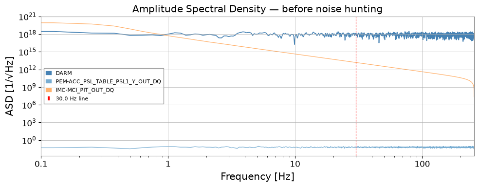
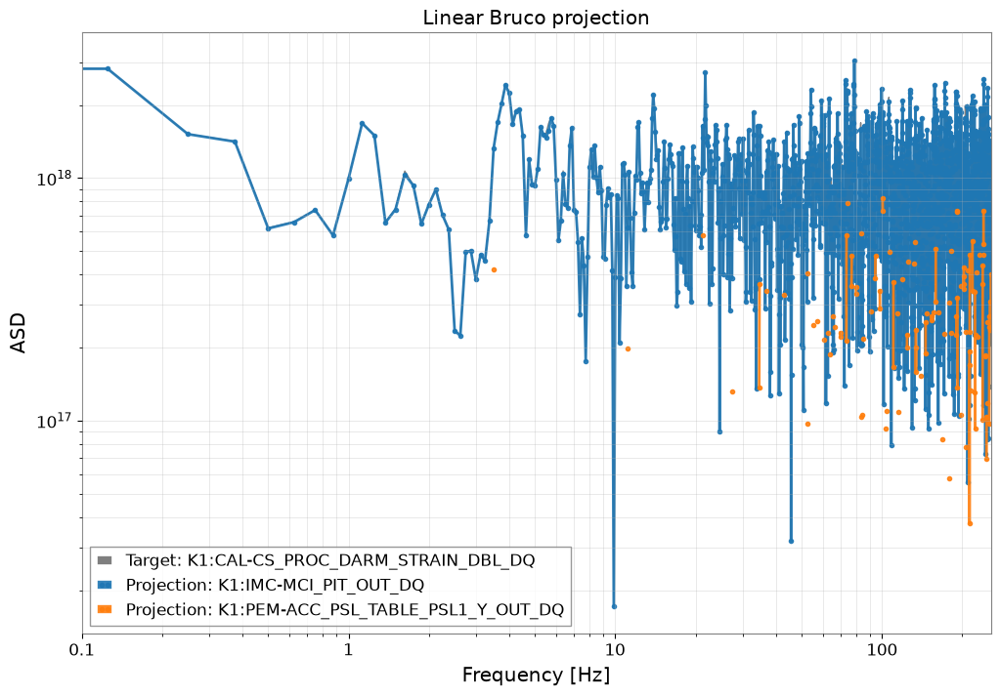
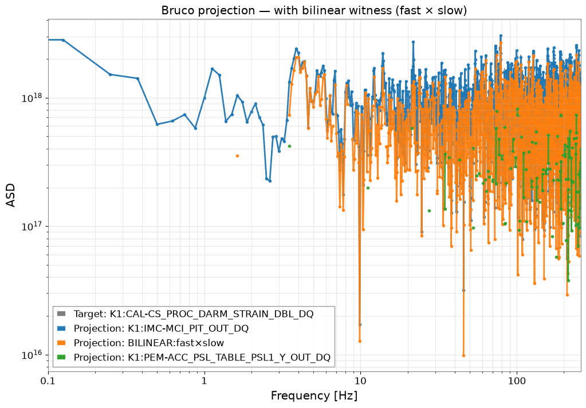
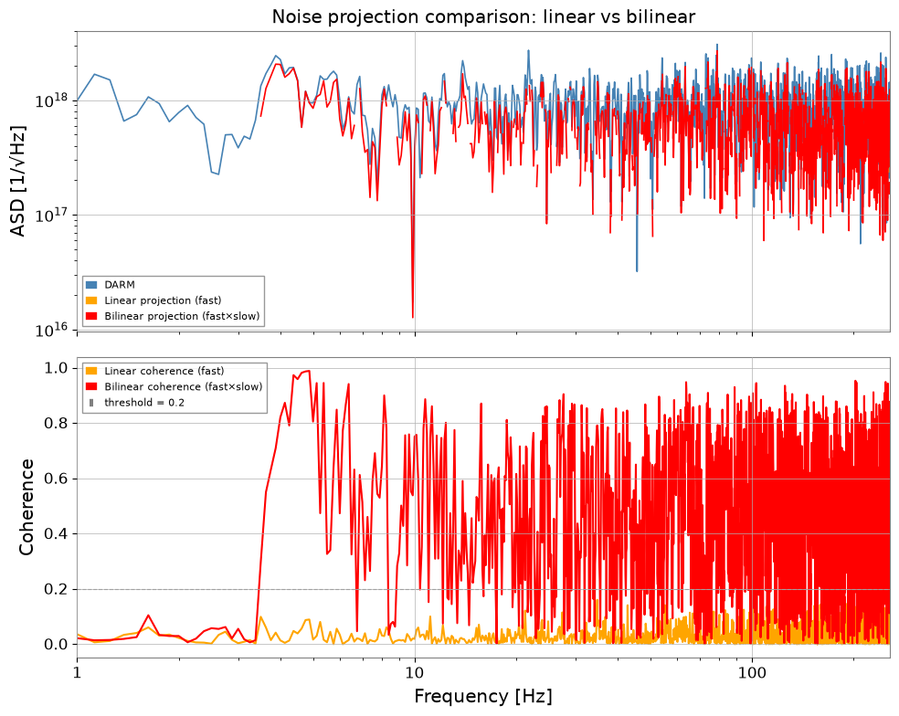
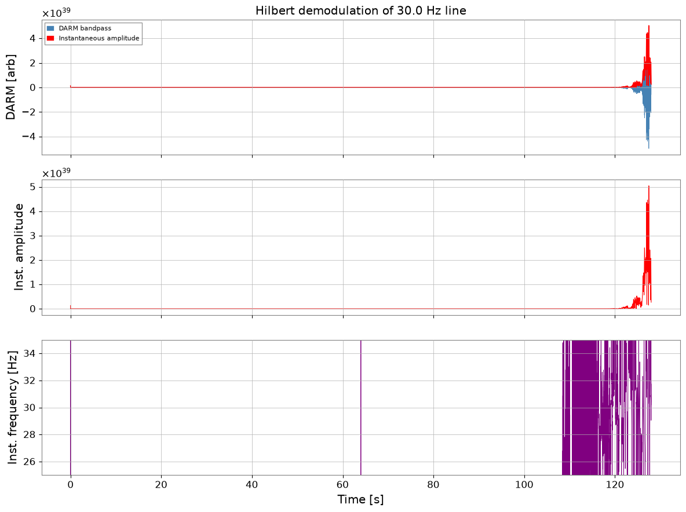
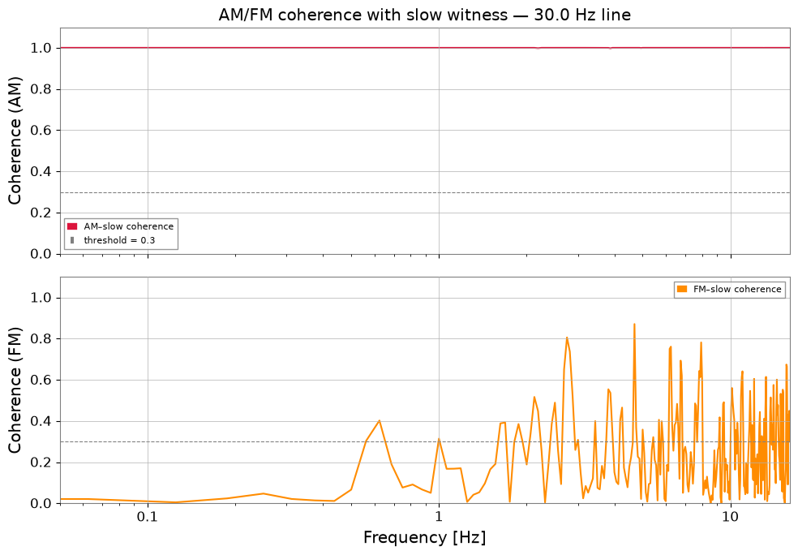
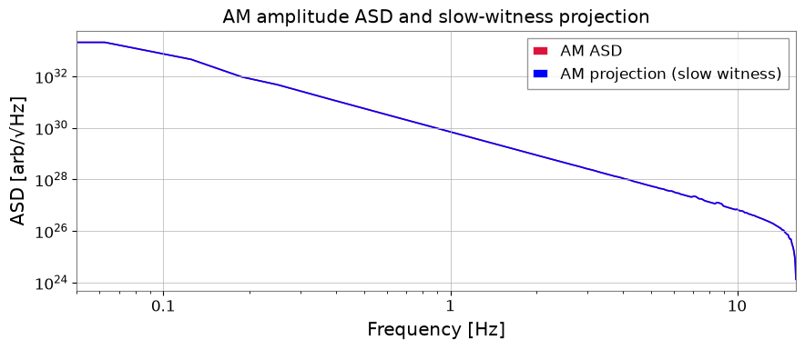

Bruco: バイリニアカップリングと AM/FM 復調#
標準的な Bruco スキャンは、DARM と補助チャンネル間の線形コヒーレンスのみを検出します。実際の干渉計ノイズには、線形スキャンが完全に見逃す非線形結合メカニズムがしばしば関与します。このチュートリアルでは、O4 コミッショニングデータで見られ、gwexpy のユースケースカタログから抽出された 2 つの一般的な高度なパターンを扱います：
双線形結合の検出 — 合成 witness
fast × slowを構築し、拡張したチャンネルセットに対して Bruco を実行します。ヒルベルト AM/FM 復調 — スペクトル線の瞬時振幅／周波数を抽出し、これらのゆっくり変化する包絡線を環境センサーと相関させます。
どちらの場合も物理的な問いは同じです。どのゆっくりした環境変数や制御変数が DARM に見られる高周波の特徴を変調しているのか、そしてその仮説を Bruco が検証できるようにどう符号化すべきか、ということです。
準備#
import warnings
warnings.filterwarnings("ignore", category=UserWarning)
warnings.filterwarnings("ignore", category=DeprecationWarning)
# ruff: noqa: I001
import matplotlib.pyplot as plt
import numpy as np
from astropy import units as u
from scipy.signal import hilbert
from gwexpy.analysis import Bruco
from gwexpy.timeseries import TimeSeries, TimeSeriesDict
1. モックデータ生成#
DARM チャンネルには Gaussian フロアに加え、以下の 2 種類のノイズを重畳します。
ノイズ種別 |
機構 |
特徴 |
|---|---|---|
バイリニア |
|
fast チャンネル周波数付近にサイドバンド |
AM ライン |
|
振幅が揺らぐ 30 Hz ライン |
線形 Bruco では個々のウィットネスチャンネルと DARM の直接コヒーレンスは低く、 バイリニアカップリングは検出されません。
よくある誤り：ベースラインスキャンだけで「コヒーレンスがない」ことを「結合がない」と結論づけること。双線形問題では、線形 witness の失敗は否定的な結果ではなく、予期される診断です。
rng = np.random.default_rng(0)
fs = 512 # sample rate [Hz]
T = 128.0 # duration [s]
n = int(fs * T)
t = np.arange(n) / fs
# ------------------------------------------------------------------
# Independent physical sources
# ------------------------------------------------------------------
# 1. Broadband Gaussian noise — the "true" DARM floor
src_broad = rng.normal(0, 1, n)
# 2. A fast vibration source (e.g. PSL table accelerometer)
# Contains a 116 Hz mechanical resonance driven broadband
src_fast = rng.normal(0, 1, n) # broadband fast channel
# 3. A slow environmental drift (e.g. IMC alignment, thermal)
# Bandwidth 0.1 – 5 Hz
src_slow_raw = rng.normal(0, 1, n)
from scipy.signal import butter, lfilter
b, a = butter(4, [0.1, 5], btype='band', fs=fs)
src_slow = lfilter(b, a, src_slow_raw)
# ------------------------------------------------------------------
# SCENARIO A: BILINEAR COUPLING
# A fast vibration (116 Hz) is amplitude-modulated by the slow drift
# and couples into DARM.
# DARM_bilinear ~ src_fast * src_slow (frequency-shifted sidebands)
# ------------------------------------------------------------------
BILINEAR_COUPLING = 0.6
darm_bilinear = BILINEAR_COUPLING * src_fast * src_slow
# ------------------------------------------------------------------
# SCENARIO B: AM-MODULATED LINE
# A 30 Hz line (e.g. power harmonics) is amplitude-modulated
# by the slow drift → instability visible in Hilbert amplitude
# ------------------------------------------------------------------
LINE_FREQ = 30.0 # Hz
LINE_AMP = 0.4
AM_DEPTH = 0.5 # modulation index
carrier = np.sin(2 * np.pi * LINE_FREQ * t)
envelope = 1 + AM_DEPTH * src_slow / (np.std(src_slow) + 1e-10)
darm_am = LINE_AMP * carrier * np.clip(envelope, 0, None)
# ------------------------------------------------------------------
# DARM = floor + bilinear noise + AM line
# ------------------------------------------------------------------
darm_raw = src_broad + darm_bilinear + darm_am
target = TimeSeries(
darm_raw, dt=1/fs, unit=u.dimensionless_unscaled,
name="K1:CAL-CS_PROC_DARM_STRAIN_DBL_DQ", t0=0,
)
# Auxiliary channels
# fast witness: correlated with src_fast (pure witness, no slow info)
witness_fast = TimeSeries(
src_fast + 0.2 * rng.normal(0, 1, n),
dt=1/fs, unit=u.dimensionless_unscaled,
name="K1:PEM-ACC_PSL_TABLE_PSL1_Y_OUT_DQ", t0=0,
)
# slow witness: correlated with src_slow
witness_slow = TimeSeries(
src_slow + 0.05 * rng.normal(0, 1, n),
dt=1/fs, unit=u.dimensionless_unscaled,
name="K1:IMC-MCI_PIT_OUT_DQ", t0=0,
)
aux_dict = TimeSeriesDict({
witness_fast.name: witness_fast,
witness_slow.name: witness_slow,
})
print(f"DARM sample rate : {target.sample_rate}")
print(f"Duration : {T} s")
print(f"Aux channels : {list(aux_dict.keys())}")
DARM sample rate : 512.0 Hz
Duration : 128.0 s
Aux channels : ['K1:PEM-ACC_PSL_TABLE_PSL1_Y_OUT_DQ', 'K1:IMC-MCI_PIT_OUT_DQ']
fig, ax = plt.subplots(figsize=(10, 4))
asd = target.asd(fftlength=8, overlap=4)
ax.loglog(asd.frequencies.value, asd.value, label="DARM", color="steelblue", lw=1.2)
for name, ts in aux_dict.items():
a = ts.asd(fftlength=8, overlap=4)
ax.loglog(a.frequencies.value, a.value, alpha=0.6, lw=0.9,
label=name.split(":")[-1])
ax.axvline(LINE_FREQ, color="red", ls="--", lw=0.8, label=f"{LINE_FREQ} Hz line")
ax.set_xlim(0.1, fs / 2)
ax.set_xlabel("Frequency [Hz]")
ax.set_ylabel("ASD [1/√Hz]")
ax.set_title("Amplitude Spectral Density — before noise hunting")
ax.legend(fontsize=8)
plt.tight_layout()
plt.show()

2. 線形 Bruco スキャン（ベースライン）#
2 つのウィットネスチャンネルで通常の線形コヒーレンススキャンを実行します。 バイリニアカップリングはここでは見えないことを確認します。
bruco = Bruco(target_channel=target.name, aux_channels=[])
result_linear = bruco.compute(
fftlength=8.0, overlap=4.0,
target_data=target, aux_data=aux_dict,
top_n=2,
)
print("Linear Bruco scan complete.")
result_linear.plot_projection(coherence_threshold=0.3)
plt.xlim(0.1, fs / 2)
plt.title("Linear Bruco projection")
plt.show()
df_linear = result_linear.to_dataframe(ranks=[0])
print("\nTop coherences (linear scan):")
print(df_linear.sort_values("coherence", ascending=False).head(10).to_string(index=False))
Linear Bruco scan complete.

Top coherences (linear scan):
frequency rank channel coherence projection
49.000 1 K1:IMC-MCI_PIT_OUT_DQ 0.999987 1.691310e+18
241.875 1 K1:IMC-MCI_PIT_OUT_DQ 0.999975 1.162312e+18
193.625 1 K1:IMC-MCI_PIT_OUT_DQ 0.999962 1.043952e+17
200.875 1 K1:IMC-MCI_PIT_OUT_DQ 0.999919 1.092047e+18
53.875 1 K1:IMC-MCI_PIT_OUT_DQ 0.999912 1.399128e+18
108.000 1 K1:IMC-MCI_PIT_OUT_DQ 0.999904 1.332632e+18
92.750 1 K1:IMC-MCI_PIT_OUT_DQ 0.999893 1.490317e+18
170.250 1 K1:IMC-MCI_PIT_OUT_DQ 0.999892 8.576261e+17
249.500 1 K1:IMC-MCI_PIT_OUT_DQ 0.999889 3.130930e+17
114.000 1 K1:IMC-MCI_PIT_OUT_DQ 0.999872 8.098280e+17
3. バイリニアカップリング検出#
レシピ（O4b DARM 116 Hz 解析・IMMT バイリニアコミッショニング解析より）:
fast_hp = witness_fast.highpass(10) # strip DC / slow drift
slow_bp = witness_slow.bandpass(0.1, 5) # keep only slow modulation
witness_bilinear = fast_hp * slow_bp # synthetic bilinear witness
この合成チャンネルは干渉計内部の積型非線形性を模擬します。 DARM が fast × slow を含む場合、バイリニアウィットネスとの高いコヒーレンスが現れます。
拡張チャンネルセットを Bruco.compute() に渡して再スキャンします。
失敗しやすいパターン：過度に広いスローバンドを使ったり、fast witness に DC トレンドを残したりすること。どちらの選択も積 witness を不鮮明にし、見栄えはよいが非局所的なコヒーレンスをしばしば生み出します。スロー witness は、物理的に予想される変調帯域に結びつけておきましょう。
# ------------------------------------------------------------------
# Build bilinear witness: fast × slow
# ------------------------------------------------------------------
fast_hp = witness_fast.highpass(10) # remove DC / drift from fast channel
slow_bp = witness_slow.bandpass(0.1, 5) # keep only slow modulation band
witness_bilinear = fast_hp * slow_bp
witness_bilinear.name = "BILINEAR:fast×slow"
aux_extended = TimeSeriesDict({
witness_fast.name: witness_fast,
witness_slow.name: witness_slow,
witness_bilinear.name: witness_bilinear,
})
result_bilinear = bruco.compute(
fftlength=8.0, overlap=4.0,
target_data=target, aux_data=aux_extended,
top_n=3,
)
print("Bilinear-extended Bruco scan complete.")
result_bilinear.plot_projection(coherence_threshold=0.3)
plt.xlim(0.1, fs / 2)
plt.title("Bruco projection — with bilinear witness (fast × slow)")
plt.show()
df_bilinear = result_bilinear.to_dataframe(ranks=[0])
print("\nTop coherences (bilinear-extended scan):")
print(df_bilinear.sort_values("coherence", ascending=False).head(10).to_string(index=False))
Bilinear-extended Bruco scan complete.

Top coherences (bilinear-extended scan):
frequency rank channel coherence projection
49.000 1 K1:IMC-MCI_PIT_OUT_DQ 0.999987 1.691310e+18
241.875 1 K1:IMC-MCI_PIT_OUT_DQ 0.999975 1.162312e+18
193.625 1 K1:IMC-MCI_PIT_OUT_DQ 0.999962 1.043952e+17
200.875 1 K1:IMC-MCI_PIT_OUT_DQ 0.999919 1.092047e+18
53.875 1 K1:IMC-MCI_PIT_OUT_DQ 0.999912 1.399128e+18
108.000 1 K1:IMC-MCI_PIT_OUT_DQ 0.999904 1.332632e+18
92.750 1 K1:IMC-MCI_PIT_OUT_DQ 0.999893 1.490317e+18
170.250 1 K1:IMC-MCI_PIT_OUT_DQ 0.999892 8.576261e+17
249.500 1 K1:IMC-MCI_PIT_OUT_DQ 0.999889 3.130930e+17
114.000 1 K1:IMC-MCI_PIT_OUT_DQ 0.999872 8.098280e+17
# Compare DARM ASD vs bilinear projection
asd_darm = target.asd(fftlength=8, overlap=4)
fftlength = 8.0; overlap = 4.0
coh_lin = target.coherence(witness_fast, fftlength=fftlength, overlap=overlap)
coh_bili = target.coherence(witness_bilinear, fftlength=fftlength, overlap=overlap)
proj_lin = asd_darm * coh_lin ** 0.5
proj_bili = asd_darm * coh_bili ** 0.5
# Mask below threshold
THRESH = 0.2
proj_lin.value[coh_lin.value < THRESH] = np.nan
proj_bili.value[coh_bili.value < THRESH] = np.nan
fig, axes = plt.subplots(2, 1, figsize=(10, 8), sharex=True)
axes[0].loglog(asd_darm.frequencies.value, asd_darm.value,
color="steelblue", label="DARM", lw=1.2)
axes[0].loglog(proj_lin.frequencies.value, proj_lin.value,
color="orange", label="Linear projection (fast)", lw=1.2)
axes[0].loglog(proj_bili.frequencies.value, proj_bili.value,
color="red", label="Bilinear projection (fast×slow)", lw=1.2)
axes[0].set_ylabel("ASD [1/√Hz]")
axes[0].set_title("Noise projection comparison: linear vs bilinear")
axes[0].legend(fontsize=8)
axes[0].set_xlim(1, fs / 2)
axes[1].semilogx(coh_lin.frequencies.value, coh_lin.value,
color="orange", label="Linear coherence (fast)")
axes[1].semilogx(coh_bili.frequencies.value, coh_bili.value,
color="red", label="Bilinear coherence (fast×slow)")
axes[1].axhline(THRESH, color="gray", ls="--", lw=0.8, label=f"threshold = {THRESH}")
axes[1].set_xlabel("Frequency [Hz]")
axes[1].set_ylabel("Coherence")
axes[1].legend(fontsize=8)
plt.tight_layout()
plt.show()

4. Hilbert AM/FM 復調#
スペクトル線がゆっくりした環境擾乱で振幅変調（AM）または周波数変調（FM）されている場合、 キャリア周波数と低速チャンネルの直接コヒーレンスはゼロです。しかし、 包絡線は高いコヒーレンスを持ちます。
レシピ（O4c PEM injection シェーカー解析より）:
darm_bp = darm.bandpass(f_line - FW, f_line + FW) # isolate the line
z = scipy.signal.hilbert(darm_bp.value) # analytic signal
inst_amp = abs(z) # amplitude envelope
inst_freq = diff(unwrap(angle(z))) / (2π Δt) # instantaneous frequency
inst_amp および inst_freq を低速補助チャンネルと相関させ、 変調源を特定します。
よくある誤り：生のキャリア ASD をスロー witness と相関させ、そこで止めること。AM/FM 問題は通常、キャリアビン自体ではなく、包絡線または瞬時周波数チャンネルに存在します。
# ------------------------------------------------------------------
# Hilbert AM/FM demodulation of the DARM line at LINE_FREQ Hz
# ------------------------------------------------------------------
FW = 5.0 # half-bandwidth around the line [Hz]
# 1. Isolate the line with a bandpass filter
darm_bp = target.bandpass(LINE_FREQ - FW, LINE_FREQ + FW)
# 2. Analytic signal via Hilbert transform
z = hilbert(darm_bp.value) # complex analytic signal
inst_amp_val = np.abs(z) # instantaneous amplitude (envelope)
inst_phs_val = np.unwrap(np.angle(z))
# instantaneous frequency = d(phase)/dt / (2π)
dt = float(darm_bp.dt.value)
inst_freq_val = np.diff(inst_phs_val) / (2 * np.pi * dt)
# Pad to match length
inst_freq_val = np.append(inst_freq_val, inst_freq_val[-1])
inst_amp = TimeSeries(inst_amp_val, dt=dt, unit=u.dimensionless_unscaled, t0=0,
name="DARM_inst_amp")
inst_freq = TimeSeries(inst_freq_val, dt=dt, unit=u.Hz, t0=0,
name="DARM_inst_freq")
# 3. Quick check: plot amplitude envelope and instantaneous frequency
fig, axes = plt.subplots(3, 1, figsize=(12, 9), sharex=True)
axes[0].plot(darm_bp.times.value, darm_bp.value, lw=0.5, color="steelblue",
label="DARM bandpass")
axes[0].plot(inst_amp.times.value, inst_amp.value, lw=1.2, color="red",
label="Instantaneous amplitude")
axes[0].set_ylabel("DARM [arb]")
axes[0].legend(fontsize=8)
axes[0].set_title(f"Hilbert demodulation of {LINE_FREQ} Hz line")
axes[1].plot(inst_amp.times.value, inst_amp.value, color="red", lw=0.8)
axes[1].set_ylabel("Inst. amplitude")
axes[2].plot(inst_freq.times.value, inst_freq.value, color="purple", lw=0.6)
axes[2].set_ylim(LINE_FREQ - FW, LINE_FREQ + FW)
axes[2].set_ylabel("Inst. frequency [Hz]")
axes[2].set_xlabel("Time [s]")
plt.tight_layout()
plt.show()

5. AM/FM と低速ウィットネスのコヒーレンス#
Hilbert 包絡線（inst_amp）と瞬時周波数（inst_freq）は 変調周波数帯域（ここでは 0 – 5 Hz）に独自の ASD を持ちます。 これらと低速環境チャンネルのコヒーレンスを計算し、変調源を特定します。
注意すべき失敗モード：キャリア周りのバンドパスが広すぎると、隣接する線が解析信号に漏れ込みます。狭すぎると、復調された包絡線が人為的に抑制されます。一つの物理的な線系列を分離するようにキャリア窓を調整してください。
# ------------------------------------------------------------------
# Coherence of AM/FM signals with slow witness
# ------------------------------------------------------------------
# Resample to reduce computation (inst_amp modulation is slow)
RESAMP_FS = 32 # Hz — well above the 5 Hz modulation bandwidth
inst_amp_rs = inst_amp.resample(RESAMP_FS)
inst_freq_rs = inst_freq.resample(RESAMP_FS)
slow_rs = witness_slow.resample(RESAMP_FS)
fftlength_slow = 16.0; overlap_slow = 8.0
coh_am = inst_amp_rs.coherence(slow_rs, fftlength=fftlength_slow,
overlap=overlap_slow)
coh_fm = inst_freq_rs.coherence(slow_rs, fftlength=fftlength_slow,
overlap=overlap_slow)
fig, axes = plt.subplots(2, 1, figsize=(10, 7), sharex=True)
axes[0].semilogx(coh_am.frequencies.value, coh_am.value,
color="crimson", label="AM–slow coherence")
axes[0].axhline(0.3, color="gray", ls="--", lw=0.8, label="threshold = 0.3")
axes[0].set_ylabel("Coherence (AM)")
axes[0].set_title(f"AM/FM coherence with slow witness — {LINE_FREQ} Hz line")
axes[0].legend(fontsize=8)
axes[0].set_ylim(0, 1.1)
axes[1].semilogx(coh_fm.frequencies.value, coh_fm.value,
color="darkorange", label="FM–slow coherence")
axes[1].axhline(0.3, color="gray", ls="--", lw=0.8)
axes[1].set_ylabel("Coherence (FM)")
axes[1].set_xlabel("Frequency [Hz]")
axes[1].legend(fontsize=8)
axes[1].set_ylim(0, 1.1)
axes[1].set_xlim(0.05, RESAMP_FS / 2)
plt.tight_layout()
plt.show()
# ASD projection: how much of the line amplitude fluctuation is explained?
asd_am = inst_amp_rs.asd(fftlength=fftlength_slow, overlap=overlap_slow)
asd_am_proj = asd_am * coh_am ** 0.5
THRESH = 0.2
asd_am_proj.value[coh_am.value < THRESH] = np.nan
fig, ax = plt.subplots(figsize=(9, 4))
ax.loglog(asd_am.frequencies.value, asd_am.value,
color="crimson", label="AM ASD", lw=1.2)
ax.loglog(asd_am_proj.frequencies.value, asd_am_proj.value,
color="blue", label="AM projection (slow witness)", lw=1.2)
ax.set_xlim(0.05, RESAMP_FS / 2)
ax.set_xlabel("Frequency [Hz]")
ax.set_ylabel("ASD [arb/√Hz]")
ax.set_title("AM amplitude ASD and slow-witness projection")
ax.legend()
plt.tight_layout()
plt.show()


まとめ#
ステップ |
ツール |
目的 |
|---|---|---|
1. |
モックデータ |
バイリニアノイズ + AM ライン |
2. |
|
ベースライン確認 — 非線形カップリングは見えない |
3. |
|
バイリニアカップリング検出 |
4. |
|
スペクトル線の AM/FM 成分抽出 |
5. |
|
変調源の特定 |
重要なポイント#
結合が
DARM ≈ f_fast × f_slowの形をとる場合、線形 Bruco では不十分です。合成fast × slowwitness を構築するとコヒーレンスが回復します。ヒルベルト復調はキャリア（高周波）を変調（低周波）から分離し、変調帯域でのコヒーレンス探索を可能にします。
どちらのパターンも
TimeSeriesの算術（*、.highpass()、.bandpass()）とBruco.compute()のみを必要とし、追加の gwexpy モジュールは不要です。期待される物理が積型や低速変調なら、ベースライン線形スキャンの失敗自体が重要な手掛かりになる。
次のステップ#
実データは
TimeSeries.read()で NDS/GWF から読み込む。バイリニアスキャンを全
(ch_fast, ch_slow)ペアに系統的に拡張する。Spectrogram.normalize(method='snr')と組み合わせて、振幅変調を時間にわたる SNR スペクトログラムとして追跡できます。
print("=" * 68)
print(" Advanced Bruco Workflow Summary")
print("=" * 68)
rows = [
("1", "Mock data generation",
"Bilinear noise + AM-modulated 30 Hz line"),
("2", "Linear Bruco scan",
"Missed bilinear coupling (only direct coherence)"),
("3", "Bilinear witness: fast×slow",
"ts_fast.highpass() * ts_slow.bandpass() → Bruco.compute()"),
("4", "Hilbert demodulation",
"bandpass → hilbert() → inst_amp, inst_freq"),
("5", "AM/FM coherence scan",
"inst_amp.coherence(slow) — identifies modulation source"),
]
print(f" {'Step':<4} {'Stage':<28} {'Key operation'}")
print("-" * 68)
for step, stage, key in rows:
print(f" {step:<4} {stage:<28} {key}")
print("=" * 68)
====================================================================
Advanced Bruco Workflow Summary
====================================================================
Step Stage Key operation
--------------------------------------------------------------------
1 Mock data generation Bilinear noise + AM-modulated 30 Hz line
2 Linear Bruco scan Missed bilinear coupling (only direct coherence)
3 Bilinear witness: fast×slow ts_fast.highpass() * ts_slow.bandpass() → Bruco.compute()
4 Hilbert demodulation bandpass → hilbert() → inst_amp, inst_freq
5 AM/FM coherence scan inst_amp.coherence(slow) — identifies modulation source
====================================================================